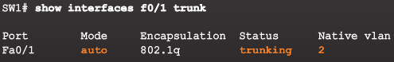
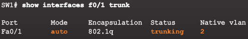
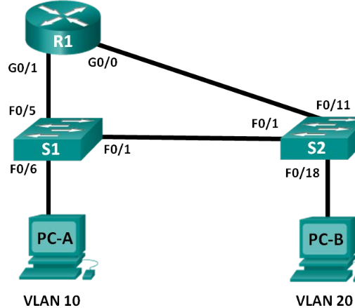

VLANS¶
One of the technologies used to improve network performance is the separation of large broadcast domains into smaller ones.
The role of providing access into a LAN is normally reserved for an access layer switch. A virtual local area network (VLAN) can be created on a Layer 2 switch to reduce the size of broadcast domains, similar to a Layer 3 device. VLANs are commonly incorporated into network design making it easier for a network to support the goals of an organization. While VLANs are primarily used within switched local area networks, modern implementations of VLANs allow them to span MANs and WANs.
Because VLANs segment the network, a Layer 3 process is required to allow traffic to move from one network segment to another.
This Layer 3 routing process can either be implemented using a router or a Layer 3 switch interface. The use of a Layer 3 device provides a method for controlling the flow of traffic between network segments, including network segments created by VLANs.
The first part of this chapter will cover how to configure, manage, and troubleshoot VLANs and VLAN trunks. The second part of this chapter focuses on implementing inter-VLAN routing using a router. Inter-VLAN routing on a Layer 3 switch is covered in a later course.
Packets destined for devices that do not belong to the VLAN must be forwarded through a device that supports routing.
Note
A VLAN creates a logical broadcast domain that can span multiple physical LAN segments. VLANs improve network performance by separating large broadcast domains into smaller ones. If a device in one VLAN sends a broadcast Ethernet frame, all devices in the VLAN receive the frame, but devices in other VLANs do not.
Note
VLANs enable the implementation of access and security policies according to specific groupings of users. Each switch port can be assigned to only one VLAN (with the exception of a port connected to an IP phone or to another switch).
VLAN Benefits¶
- Improved Security:
- Groups that have sensitive data are separated from the rest of the network
- Reduced Cost:
- Reduced need for expensive network upgrades and more efficient use of existing bandwidth and uplinks
- Better Performance:
- Dividing L2 networks into multiple logical workgroups (broadcast domains) reduces unnecessary traffic
- Smaller Broadcast Domains
- IT Efficiency:
- VLANs make it easier to manage the network because users with similar network requirements share the same VLAN. When a new switch is provisioned, all the policies and procedures already configured for the particular VLAN are implemented when the ports are assigned. It is also easy for the IT staff to identify the function of a VLAN by giving it an appropriate name
- Management Efficiency
- Simpler Project and Application Management: VLANs aggregate users and network devices to support business or geographic requirements. Having separate functions makes managing a project or working with a specialized application easier; an example of such an application is an e-learning development platform for faculty.
Each VLAN in a switched network corresponds to an IP network. Therefore, VLAN design must take into consideration the implementation of a hierarchical network-addressing scheme. Hierarchical network addressing means that IP network numbers are applied to network segments or VLANs in an orderly fashion that takes the network as a whole into consideration.
VLAN Types¶
- Data VLAN:
- for user generated traffic aka user VLAN. Used to seperate the network into groups of users or devices
- Default VLAN:
- All switch ports become part of it after initial boot. VLAN 1. View with
show vlan brief. VLAN 2 cannot be renamed or deleted - Native VLAN:
- Assigned to an 802.1Q trunk port (links between switches) that supports VLAN tagged traffic & untagged traffic. Tagged means there is a 4-byte tag inserted in original Ethernet frame header. The 802.1Q trunk port places untagged traffic on the native VLAN, that is VLAN 1 by default. It is a best practice to configure the native VLAN as an unused VLAN, distinct from VLAN 1 and other VLANs
- Management VLAN:
- VLAN configured to access the management capabilities of a switch. VLAN 1 is the management VLAN by default. To create the management VLAN, the switch virtual interface (SVI) of that VLAN is assigned an IP address and a subnet mask, allowing the switch to be managed via HTTP, Telnet, SSH, or SNMP.
Voice VLANs¶
VoIP traffic requires:
- Assured bandwidth to ensure voice quality
- Transmission priority over other types of network traffic
- Ability to be routed around congested areas on the network
- Delay of less than 150 ms across the network
To meet these requirements, the entire network has to be designed to support VoIP.

VLAN Trunks¶
A trunk is a point-to-point link between 2 network devices dat carries more than one VLAN. It extends VLANS across an entire network. This way no router is needed.
A trunk does not belong to a specific VLAN, it is a conduit for multiple VLANS between switches and routers. A trunk can also be used between a NW device and server or other device that is equiped with an 802.1Q capable NIC

802.1Q Frame¶

When the switch receives a frame on a port configured in access mode and assigned a VLAN, the switch inserts a VLAN tag in the frame header, recalculates the Frame Check Sequence (FCS), and sends the tagged frame out of a trunk port.
VLAN Tag Field Details¶
- The VLAN tag field consists of a Type field, a Priority field, a Canonical Format Identifier field, and VLAN ID field:
- Type - A 2-byte value called the tag protocol ID (TPID) value. For Ethernet, it is set to hexadecimal 0x8100.
- User priority - A 3-bit value that supports level or service implementation.
- Canonical Format Identifier (CFI) - A 1-bit identifier that enables Token Ring frames to be carried across Ethernet links.
- VLAN ID (VID) - A 12-bit VLAN identification number that supports up to 4096 VLAN IDs.
Note
After the switch inserts the Type and tag control information fields, it recalculates the FCS values and inserts the new FCS into the frame.
Native VLANS & 802.1Q Tagging¶
Tagged Frames on the Native VLAN¶
Warning
If an 802.1Q trunk port receives a tagged frame with the VLAN ID that is the same as the native VLAN, it drops the frame.
Consequently, when configuring a switch port on a Cisco switch, configure devices so that they do not send tagged frames on the native VLAN. Devices from other vendors that support tagged frames on the native VLAN include IP phones, servers, routers, and non-Cisco switches.
This scenario reflects poor network design for several reasons: it uses a hub, it has a host connected to a trunk link, and it implies that the switches have access ports assigned to the native VLAN. It also illustrates the motivation for the IEEE 802.1Q specification for native VLANs as a means of handling legacy scenarios.

Untagged Frames on the Native VLAN¶
When a Cisco switch trunk port receives untagged frames (which are unusual in a well-designed network), it forwards those frames to the native VLAN. If there are no devices associated with the native VLAN (which is not unusual) and there are no other trunk ports (which is not unusual), then the frame is dropped. The default native VLAN is VLAN 1. When configuring an 802.1Q trunk port, a default Port VLAN ID (PVID) is assigned the value of the native VLAN ID. All untagged traffic coming in or out of the 802.1Q port is forwarded based on the PVID value. For example, if VLAN 99 is configured as the native VLAN, the PVID is 99 and all untagged traffic is forwarded to VLAN 99. If the native VLAN has not been reconfigured, the PVID value is set to VLAN 1.
Voice VLAN Tagging¶

- Port 1 connects to the switch or other VoIP device.
- Port 2 is an internal 10/100 interface that carries the IP phone traffic.
- Port 3 (access port) connects to a PC or other device.
Note
An access port that is used to connect a Cisco IP phone can be configured to use two separate VLANs: one VLAN for voice traffic and another VLAN for data traffic from a device attached to the phone. The link between the switch and the IP phone acts as a trunk to carry both voice VLAN traffic and data VLAN traffic.
On the switch, the access is configured to send Cisco Discovery Protocol (CDP) packets that instruct an attached IP phone to send voice traffic to the switch in one of three ways, depending on the type of traffic:
- voice VLAN tagged with a Layer 2 class of service (CoS) priority value
- access VLAN tagged with a Layer 2 CoS priority value
- access VLAN, untagged (no Layer 2 CoS priority value)
802.1Q tagging¶
| 802.1Q tag format | |||
|---|---|---|---|
| 16 bits | 3 bits | 1 bit | 12 bits |
| TPID | TCI | ||
| PCP | DEI | VID | |
Tag protocol identifier (TPID): a 16-bit field set to a value of 0x8100 in order to identify the frame as an IEEE 802.1Q-tagged frame. This field is located at the same position as the EtherType/length field in untagged frames, and is thus used to distinguish the frame from untagged frames.
Tag control information (TCI) * Priority code point (PCP): a 3-bit field which refers to the IEEE 802.1p class of service and maps to the frame priority level.
PCP values in order of priority are:
1 (background)
0 (best effort, default)
2 (excellent effort)
3 (critical application)
4 (video)
5 (voice)
6 (internetwork control)
7 (network control)
These values can be used to prioritize different classes of traffic.
Drop eligible indicator (DEI): a 1-bit field. (formerly CFI[b]) May be used separately or in conjunction with PCP to indicate frames eligible to be dropped in the presence of congestion.
VLAN identifier (VID): a 12-bit field specifying the VLAN to which the frame belongs. The hexadecimal values of 0x000 and 0xFFF are reserved. All other values may be used as VLAN identifiers, allowing up to 4,094 VLANs. The reserved value 0x000 indicates that the frame does not carry a VLAN ID; in this case, the 802.1Q tag specifies only a priority and is referred to as a priority tag. On bridges, VID 0x001 (the default VLAN ID) is often reserved for a management VLAN; this is vendor-specific. The VID value 0xFFF is reserved for implementation use; it must not be configured or transmitted. 0xFFF can be used to indicate a wildcard match in management operations or filtering database entries.
For frames using IEEE 802.2/SNAP encapsulation with an organizationally unique identifier (OUI) field of 00-00-00 (so that the protocol ID field in the SNAP header is an EtherType), as would be the case on LANs other than Ethernet, the EtherType value in the SNAP header is set to 0x8100 and the aforementioned extra 4 bytes are appended after the SNAP header.[citation needed]
Because inserting the VLAN tag changes the frame, 802.1Q encapsulation forces a recalculation of the original frame check sequence field in the Ethernet trailer.
The IEEE 802.3ac standard increased the maximum Ethernet frame size from 1518 bytes to 1522 bytes to accommodate the four-byte VLAN tag. Some network devices that do not support the larger frame size will process these frames successfully, but may report them as “baby giant” anomalies.
QinQ allows multiple VLAN tags in an Ethernet frame; together these tags constitute a tag stack. When used in the context of an Ethernet frame, a QinQ frame is a frame that has 2 VLAN 802.1Q headers (double-tagged). 802.1ad QinQ The idea is to provide, for example, the possibility for customers to run their own VLANs inside service provider’s provided VLAN. This way the service provider can just configure one VLAN for the customer and customer can then treat that VLAN as if it were a trunk.
show interfaces fa0/18 switchport
show vlan brief
VLAN Ranges¶
normal range¶
- 1, 1002 - 1005:
- Default Vlan, reserved for token ring & fiber distributed data interface (FDDI) Vlans
- Configuration:
- Stored in VLAN database file called vlan.dat located in flash memory of switch
- VTP:
- can only store normal range VLANs
extended range¶
- big corporations need extended VLAN Ids
- are identified as between 1006 - 4094
- cfgs note written to vlan.dat
- support fewer features than normal range
- saved by default in running config
- VTP doesn’t learn extended range VLANs
Warning
If you need to use extended range VLANs and you switch does not support VTPv3, then you would need to set the mode to transparent for VTP, which technically means that you are still using VTP, but you are not learning any VTP information from other VTP enabled devices. With VTPv3 you can use the extended range VLANs by setting the mode to server, client, transparent or off, because VTPv3 does support the extended range VLANs.
Configuring VLANS¶
S1# configure terminal
S1(config)# interface F0/18
S1(config-if)# switchport mode access
S1(config-if)# switchport access vlan 20
S1(config-if)# end
Note
Use the switchport voice vlan 150 command
Voice traffic must be labeled as trusted as soon as it enters the network. Use the ** mls qos trust[cos | device cisco-phone | dscp | ip-precedence] ** interface configuration command
S3(config)# vlan 20
S3(config-vlan)# name student
S3(config-vlan)# vlan 150
S3(config-vlan)# name VOICE
S3(config-vlan)# exit
S3(config)#
S3(config)# interface fa0/18
S3(config-if)# switchport mode access
S3(config-if)# switchport access vlan 20
S3(config-if)#
S3(config-if)# mls qos trust cos
S3(config-if)# switchport voice vlan 150
S3(config-if)# end
S3#
configure optional parameters¶
switch# configure terminal
switch(config)# vlan 5
switch(config-vlan)# name accounting
switch(config-vlan)# state active
switch(config-vlan)# no shutdown
adding ports to a VLAN¶
This example shows how to configure an Ethernet interface to join VLAN 5
switch# configure terminal
switch(config)# interface ethernet 1/13
switch(config-if)# switchport access vlan 5
Verifying VLAN configuration¶
show all VLANs defined in the range of 1-21
switch# show running-config vlan 1-21
version 4.0(0)
vlan 1
vlan 5
show the VLANs created on switch and their status
switch# show vlan
VLAN Name Status Ports
---- -------------------------------- --------- -------------------------------
1 default active Eth1/1, Eth1/2, Eth1/3, Eth1/4
Eth1/5, Eth1/6, Eth1/7, Eth1/8
Eth1/9, Eth1/10, Eth1/11
Eth1/12, Eth1/15, Eth1/16
Eth1/17, Eth1/18, Eth1/19
Eth1/20, Eth1/21, Eth1/22
Eth1/23, Eth1/24, Eth1/25
Eth1/26, Eth1/27, Eth1/28
Eth1/29, Eth1/30, Eth1/31
Eth1/32, Eth1/33, Eth1/34
Eth1/35, Eth1/36, Eth1/37
Eth1/38, Eth1/39, Eth1/40
Eth3/1, Eth3/2, Eth3/3, Eth3/4
veth1/1
13 VLAN0005 active Eth1/13, Eth1/14
shows the details of VLAN 13 including its member ports
switch# show vlan id 13
VLAN Name Status Ports
---- -------------------------------- --------- -------------------------------
13 VLAN0005 active Eth1/13, Eth1/14
VLAN Type MTU
---- ----- -----
13 enet 576
Remote SPAN VLAN
----------------
Disabled
Primary Secondary Type Ports
------ --------- --------------- -------------------------------------------
show the VLAN settings summary
switch# show vlan summary
Number of existing VLANs : 2
Number of existing VTP VLANs : 2
Number of existing extended VLANs : 0
remove VLAN Assignment¶
Interface F0/18 was previously assigned to VLAN 20. The no switchport access vlan command is entered for interface F0/18
S1# configure terminal
S1(config)# interface F0/18
S1(config-if)# no switchport access vlan
S1(config-if)# end
Note
VLAN 20 is still active even if no ports are assigned to it
S1# show interfaces F0/18 switchport -> verifies that access VLAN for F0/18 has been reset to VLAN 1
Note
It is not necessary to first remove a port from a VLAN to change its VLAN membership. When an access port has its VLAN membership reassigned to another existing VLAN, the new VLAN membership simply replaces the previous VLAN membership. In Figure 4, port F0/11 is assigned to VLAN 20.
deleting VLANs¶
S1# conf t
S1(config)# no vlan 20
S1(config)# end
S1# show vlan brief
Warning
Before deleting a VLAN, reassign all member ports to a different VLAN first. Any ports that are not moved to an active VLAN are unable to communicate with other hosts after the VLAN is deleted and until they are assigned to an active VLAN
Alternatively, the entire vlan.dat file can be deleted using the S1# delete flash:vlan.dat command or delete vlan.dat if on other location.
verifying VLAN info¶
show vlan summary show vlan name student show interfaces vlan 20 show interfaces F0/18 switchport
TRUNK Configuration¶
interface FastEthernet0/1
switchport mode trunk
switchport trunk native vlan 99
switchport trunk allowed vlan 10,20,30,99
end
Resetting Trunk to Default state¶
configure terminal
interface FastEthernet0/1
no switchport trunk allowed vlan
no switchport trunk native vlan
end
Verify the trunk configuration with
show interfaces f0/1 switchport command.
excercise¶
S3#conf t
S3(config)#do show vlan brief
VLAN Name Status Ports
---- -------------------------------- --------- -------------------------------
1 default active Fa0/1, Fa0/2, Fa0/3, Fa0/4
Fa0/5, Fa0/7, Fa0/8, Fa0/9
Fa0/10, Fa0/12, Fa0/13, Fa0/14
Fa0/15, Fa0/16, Fa0/17, Fa0/19
Fa0/20, Fa0/21, Fa0/22, Fa0/23
Fa0/24, Gig0/1, Gig0/2
10 Faculty/Staff active Fa0/11
20 Students active Fa0/18
30 Guest(Default) active Fa0/6
88 Management active
99 Native active
1002 fddi-default active
1003 token-ring-default active
1004 fddinet-default active
1005 trnet-default active
S3(config)#
S3(config)#interface Gig0/2
S3(config-if)#switchport mode trunk
S3(config-if)#switchport trunk native vlan 99
S3(config-if)#s%SPANTREE-2-UNBLOCK_CONSIST_PORT: Unblocking GigabitEthernet0/2 on VLAN0099. Port consistency restored.
%SPANTREE-2-UNBLOCK_CONSIST_PORT: Unblocking GigabitEthernet0/2 on VLAN0001. Port consistency restored.
switc
S3(config-if)#switchport nat
S3(config-if)#switchport native vl
S3(config-if)#switchport native vlan 99
S3(config-if)#show inter
S3(config-if)#exit
S3(config)#exit
S3#
show interface trunk
Port Mode Encapsulation Status Native vlan
Gig0/2 on 802.1q trunking 99
Port Vlans allowed on trunk
Gig0/2 1-1005
Port Vlans allowed and active in management domain
Gig0/2 1,10,20,30,88,99
Port Vlans in spanning tree forwarding state and not pruned
Gig0/2 1,10,20,30,88,99
S3#show vlan brief
VLAN Name Status Ports
---- -------------------------------- --------- -------------------------------
1 default active Fa0/1, Fa0/2, Fa0/3, Fa0/4
Fa0/5, Fa0/7, Fa0/8, Fa0/9
Fa0/10, Fa0/12, Fa0/13, Fa0/14
Fa0/15, Fa0/16, Fa0/17, Fa0/19
Fa0/20, Fa0/21, Fa0/22, Fa0/23
Fa0/24, Gig0/1
10 Faculty/Staff active Fa0/11
20 Students active Fa0/18
30 Guest(Default) active Fa0/6
88 Management active
99 Native active
1002 fddi-default active
1003 token-ring-default active
1004 fddinet-default active
1005 trnet-default active
S3#show interfaces GigabitEthernet 0/1
GigabitEthernet0/1 is down, line protocol is down (disabled)
Hardware is Lance, address is 00d0.9766.3301 (bia 00d0.9766.3301)
BW 1000000 Kbit, DLY 1000 usec,
reliability 255/255, txload 1/255, rxload 1/255
Encapsulation ARPA, loopback not set
Keepalive set (10 sec)
Full-duplex, 1000Mb/s
input flow-control is off, output flow-control is off
ARP type: ARPA, ARP Timeout 04:00:00
Last input 00:00:08, output 00:00:05, output hang never
Last clearing of "show interface" counters never
Input queue: 0/75/0/0 (size/max/drops/flushes); Total output drops: 0
Queueing strategy: fifo
Output queue :0/40 (size/max)
5 minute input rate 0 bits/sec, 0 packets/sec
5 minute output rate 0 bits/sec, 0 packets/sec
956 packets input, 193351 bytes, 0 no buffer
Received 956 broadcasts, 0 runts, 0 giants, 0 throttles
0 input errors, 0 CRC, 0 frame, 0 overrun, 0 ignored, 0 abort
0 watchdog, 0 multicast, 0 pause input
0 input packets with dribble condition detected
2357 packets output, 263570 bytes, 0 underruns
S3#show interfaces GigabitEthernet 0/1 switchport
Name: Gig0/1
Switchport: Enabled
Administrative Mode: dynamic auto
Operational Mode: down
Administrative Trunking Encapsulation: dot1q
Operational Trunking Encapsulation: native
Negotiation of Trunking: On
Access Mode VLAN: 1 (default)
Trunking Native Mode VLAN: 1 (default)
Voice VLAN: none
Administrative private-vlan host-association: none
Administrative private-vlan mapping: none
Administrative private-vlan trunk native VLAN: none
Administrative private-vlan trunk encapsulation: dot1q
Administrative private-vlan trunk normal VLANs: none
Administrative private-vlan trunk private VLANs: none
Operational private-vlan: none
Trunking VLANs Enabled: ALL
Pruning VLANs Enabled: 2-1001
Capture Mode Disabled
Capture VLANs Allowed: ALL
Protected: false
Appliance trust: none
on switch 1 running config
--------------------------
interface GigabitEthernet0/1
switchport trunk native vlan 99
switchport trunk allowed vlan 10,20,30,99
switchport mode trunk
!
interface GigabitEthernet0/2
switchport trunk native vlan 99
switchport trunk allowed vlan 10,20,30,99
switchport mode trunk
Verify commands¶
S1#show vlan brief
VLAN Name Status Ports
---- -------------------------------- --------- -------------------------------
1 default active Fa0/1, Fa0/2, Fa0/3, Fa0/4
Fa0/5, Fa0/6, Fa0/7, Fa0/8
Fa0/9, Fa0/10, Fa0/11, Fa0/12
Fa0/13, Fa0/14, Fa0/15, Fa0/16
Fa0/17, Fa0/18, Fa0/19, Fa0/20
Fa0/21, Fa0/22, Fa0/23, Fa0/24
10 Faculty/Staff active
20 Students active
30 Guest(Default) active
88 Management active
99 Native active
1002 fddi-default active
1003 token-ring-default active
1004 fddinet-default active
1005 trnet-default active
S1#show vt
S1#show vtp ?
counters VTP statistics
password VTP password
status VTP domain status
S1#show vtp status
VTP Version : 2
Configuration Revision : 12
Maximum VLANs supported locally : 255
Number of existing VLANs : 10
VTP Operating Mode : Server
VTP Domain Name :
VTP Pruning Mode : Disabled
VTP V2 Mode : Disabled
VTP Traps Generation : Disabled
MD5 digest : 0xD9 0x37 0x14 0xE2 0xAF 0x1D 0x1E 0x38
Configuration last modified by 0.0.0.0 at 3-1-93 00:01:36
Local updater ID is 0.0.0.0 (no valid interface found)
S1#show interfaces trunk
Port Mode Encapsulation Status Native vlan
Gig0/1 on 802.1q trunking 99
Gig0/2 on 802.1q trunking 99
Port Vlans allowed on trunk
Gig0/1 10,20,30,99
Gig0/2 10,20,30,99
Port Vlans allowed and active in management domain
Gig0/1 10,20,30,99
Gig0/2 10,20,30,99
Port Vlans in spanning tree forwarding state and not pruned
Gig0/1 10,20,30,99
Gig0/2 10,20,30,99
S1#show interface Gig0/1 switchport
Name: Gig0/1
Switchport: Enabled
Administrative Mode: trunk
Operational Mode: trunk
Administrative Trunking Encapsulation: dot1q
Operational Trunking Encapsulation: dot1q
Negotiation of Trunking: On
Access Mode VLAN: 1 (default)
Trunking Native Mode VLAN: 99 (Native)
Voice VLAN: none
Administrative private-vlan host-association: none
Administrative private-vlan mapping: none
Administrative private-vlan trunk native VLAN: none
Administrative private-vlan trunk encapsulation: dot1q
Administrative private-vlan trunk normal VLANs: none
Administrative private-vlan trunk private VLANs: none
Operational private-vlan: none
Trunking VLANs Enabled: ALL
Pruning VLANs Enabled: 2-1001
Capture Mode Disabled
Capture VLANs Allowed: ALL
Protected: false
Appliance trust: none
S1#show vlan
VLAN Name Status Ports
---- -------------------------------- --------- -------------------------------
1 default active Fa0/1, Fa0/2, Fa0/3, Fa0/4
Fa0/5, Fa0/6, Fa0/7, Fa0/8
Fa0/9, Fa0/10, Fa0/11, Fa0/12
Fa0/13, Fa0/14, Fa0/15, Fa0/16
Fa0/17, Fa0/18, Fa0/19, Fa0/20
Fa0/21, Fa0/22, Fa0/23, Fa0/24
10 Faculty/Staff active
20 Students active
30 Guest(Default) active
88 Management active
99 Native active
1002 fddi-default act/unsup
1003 token-ring-default act/unsup
1004 fddinet-default act/unsup
1005 trnet-default act/unsup
VLAN Type SAID MTU Parent RingNo BridgeNo Stp BrdgMode Trans1 Trans2
---- ----- ---------- ----- ------ ------ -------- ---- -------- ------ ------
1 enet 100001 1500 - - - - - 0 0
10 enet 100010 1500 - - - - - 0 0
20 enet 100020 1500 - - - - - 0 0
30 enet 100030 1500 - - - - - 0 0
88 enet 100088 1500 - - - - - 0 0
99 enet 100099 1500 - - - - - 0 0
1002 fddi 101002 1500 - - - - - 0 0
1003 tr 101003 1500 - - - - - 0 0
1004 fdnet 101004 1500 - - - ieee - 0 0
1005 trnet 101005 1500 - - - ibm - 0 0
VLAN Type SAID MTU Parent RingNo BridgeNo Stp BrdgMode Trans1 Trans2
---- ----- ---------- ----- ------ ------ -------- ---- -------- ------ ------
Remote SPAN VLANs
------------------------------------------------------------------------------
Primary Secondary Type Ports
------- --------- ----------------- ------------------------------------------
S1#
combination exercise¶

| Device | Interface | IP Address | Subnet Mask | Default Gateway |
|---|---|---|---|---|
| S1 | VLAN 1 | 192.168.1.11 | 255.255.255.0 | N/A |
| S2 | VLAN 1 | 192.168.1.12 | 255.255.255.0 | N/A |
| PC-A | NIC | 192.168.10.3 | 255.255.255.0 | 192.168.10.1 |
| PC-B | NIC | 192.168.10.4 | 255.255.255.0 | 192.168.10.1 |
| PC-C | NIC | 192.168.20.3 | 255.255.255.0 | 192.168.20.1 |
basic configuration for switch
no ip domain-lookup
service password-encryption
enable secret class
banner motd #
Unauthorized access is strictly prohibited. #
line con 0
password cisco
login
logging synchronous
line vty 0 15
password cisco
logging synchronous
login
exit
create VLANs on switches
S1(config)# vlan 10
S1(config-vlan)# name Student
S1(config-vlan)# vlan 20
S1(config-vlan)# name Faculty
S1(config-vlan)# vlan 99
S1(config-vlan)# name Management
S1(config-vlan)# end
Assign VLANs to the interfaces
S1(config)# interface f0/6
S1(config-if)# switchport mode access
S1(config-if)# switchport access vlan 10
Move the switch IP address VLAN 99.
S1(config)# interface vlan 1
S1(config-if)# no ip address
S1(config-if)# interface vlan 99
S1(config-if)# ip address 192.168.1.11 255.255.255.0
S1(config-if)# end
Assign a VLAN to multiple interfaces
S1(config)# interface range f0/11-24
S1(config-if-range)# switchport mode access
S1(config-if-range)# switchport access vlan 10
S1(config-if-range)# end
Use the no switchport access vlan command to remove the VLAN 10 assignment to F0/24
S1(config)# interface f0/24
S1(config-if)# no switchport access vlan
S1(config-if)# end
Add VLAN 30 to interface F0/24 without issuing the VLAN command.
S1(config)# interface f0/24
S1(config-if)# switchport access vlan 30
% Access VLAN does not exist. Creating vlan 30
Use the no vlan 30 command to remove VLAN 30 from the VLAN database.
S1(config)# no vlan 30
S1(config)# end
S1(config)# interface Fa0/24
S1(config-if)# no switchport access vlan
Note
Current switch technology no longer requires that the vlan command be issued to add a VLAN to the database. By assigning an unknown VLAN to a port, the VLAN adds to the VLAN database.
Note
Before removing a VLAN from the database, it is recommended that you reassign all the ports assigned to that VLAN
Configuring Trunks
use the Dynamic Trunking Protocol (DTP) to allow it to negotiate the trunk mode. After this has been accomplished and verified, you will disable DTP on interface F0/1 and manually configure it as a trunk.
Set F0/1 on S1 to negotiate trunk mode
S1(config)# interface f0/1
S1(config-if)# switchport mode dynamic desirable
Mar 1 05:07:28.746: %LINEPROTO-5-UPDOWN: Line protocol on Interface Vlan1, changed
state to down
Mar 1 05:07:29.744: %LINEPROTO-5-UPDOWN: Line protocol on Interface FastEthernet0/1,
changed state to down
S1(config-if)#
Mar 1 05:07:32.772: %LINEPROTO-5-UPDOWN: Line protocol on Interface FastEthernet0/1,
changed state to up
S1(config-if)#
**Mar 1 05:08:01.789: %LINEPROTO-5-UPDOWN: Line protocol on Interface Vlan99, changed
state to up**
Mar 1 05:08:01.797: %LINEPROTO-5-UPDOWN: Line protocol on Interface Vlan1, changed
state to up
You should also receive link status messages on S2.
S2#
Mar 1 05:07:29.794: %LINEPROTO-5-UPDOWN: Line protocol on Interface FastEthernet0/1,
changed state to down
S2#
Mar 1 05:07:32.823: %LINEPROTO-5-UPDOWN: Line protocol on Interface FastEthernet0/1,
changed state to up
S2#
Mar 1 05:08:01.839: %LINEPROTO-5-UPDOWN: Line protocol on Interface Vlan99, changed
state to up
Mar 1 05:08:01.850: %LINEPROTO-5-UPDOWN: Line protocol on Interface Vlan1, changed
state to up
on S1 and S2. Interface F0/1 is no longer assigned to VLAN 1.
Trunked interfaces are not listed in the VLAN table
S1# show vlan brief
VLAN Name Status Ports
---- -------------------------------- --------- -------------------------------
1 default active Fa0/2, Fa0/3, Fa0/4, Fa0/5
S1# show interfaces trunk
Port Mode Encapsulation Status Native vlan
Fa0/1 desirable 802.1q trunking 1
Port Vlans allowed on trunk
Fa0/1 1-4094
Port Vlans allowed and active in management domain
Fa0/1 1,10,20,99
Port Vlans in spanning tree forwarding state and not pruned
Fa0/1 1,10,20,99
S2# show interfaces trunk
Port Mode Encapsulation Status Native vlan
Fa0/1 auto 802.1q trunking 1
Port Vlans allowed on trunk
Fa0/1 1-4094
Port Vlans allowed and active in management domain
Fa0/1 1,10,20,99
Port Vlans in spanning tree forwarding state and not pruned
Fa0/1 1,10,20,99
Change the switchport mode on interface F0/1 to force trunking.Make sure to do this on both switches.
S1(config)# interface f0/1
S1(config-if)# switchport mode trunk
Issue the show interfaces trunk command to view the trunk mode. Notice that the mode changed from desirable to on.
S2# show interfaces trunk
Port Mode Encapsulation Status Native vlan
Fa0/1 on 802.1q trunking 99
Port Vlans allowed on trunk
Fa0/1 1-4094
Port Vlans allowed and active in management domain
Fa0/1 1,10,20,99
Port Vlans in spanning tree forwarding state and not pruned
Fa0/1 1,10,20,99
Note
By default, all VLANs are allowed on a trunk. The switchport trunk command allows you to control what VLANs have access to the trunk
Deleting the vlan
S1# show flash
S1# delete vlan.dat
Troubleshooting VLANS¶
IP Address issue VLAN¶
Each VLAN must correspond to a unique IP subnet. If two devices in the same VLAN have different subnet addresses, they cannot communicate.
Missing VLAN¶

Use the show vlan command to check whether the port belongs to the expected VLAN. If the port is assigned to the wrong VLAN, use the switchport access vlan command to correct the VLAN membership. Use the show mac address-table command to check which addresses were learned on a particular port of the switch, and to which VLAN that port is assigned, as show in Figure 2.
S1#show mac address-table
Mac Address Table
-------------------------------------------
Vlan Mac Address Type Ports
---- ----------- -------- -----
1 000a.f333.b702 DYNAMIC Gig0/2
1 00d0.5828.2501 DYNAMIC Gig0/1
10 00d0.5828.2501 DYNAMIC Gig0/1
20 00d0.5828.2501 DYNAMIC Gig0/1
30 00d0.5828.2501 DYNAMIC Gig0/1
56 000a.f333.b702 DYNAMIC Gig0/2
56 00d0.5828.2501 DYNAMIC Gig0/1
If the VLAN to which the port is assigned is deleted, the port becomes inactive. The ports of a deleted VLAN will not be listed in the output of the show vlan command. Use the show interfaces switchport command to verify the inactive VLAN is assigned to the port
- show vlan
- switchport access vlan
- show mac address-table
- show interfaces switchport
- switchport access vlan
- show interface f0/1 switchport
- no switchport access vlan vlan-id
Troubleshooting Trunks¶
most important command show interfaces trunk
 

- Native VLAN mismatches - Trunk ports are configured with different native VLANs. This configuration error generates console notifications, and can cause inter-VLAN routing issues, among other problems. This poses a security risk.
- Trunk mode mismatches - One trunk port is configured in a mode that is not compatible for trunking on the corresponding peer port. This configuration error causes the trunk link to stop working. Be sure both sides of the trunk are configured with the switchport mode trunk command. Other trunk configuration commands are beyond the scope of this course.
- Allowed VLANs on trunks - The list of allowed VLANs on a trunk has not been updated with the current VLAN trunking requirements. In this situation, unexpected traffic (or no traffic) is being sent over the trunk.

Note
start troubleshooting by examining the trunks for a native VLAN mismatch. If that is not the cause, check for trunk mode mismatches, and finally check for the allowed VLAN list on the trunk.
Mismatched Port Modes

fixed:

fix incorrect vlan list with
e.g. switchport trunk allowed vlan 10,20,99
Warning
make sure trunk port is in trunk mode not in access mode!
S2(config-if)#switchport mode trunk
S2(config-if)#
%LINEPROTO-5-UPDOWN: Line protocol on Interface GigabitEthernet0/1, changed state to down
%LINEPROTO-5-UPDOWN: Line protocol on Interface GigabitEthernet0/1, changed state to up
Troubleshooting Vlans 2¶
Packet Tracer – Troubleshooting a VLAN Implementation Scenario 2 6.2.3.8 Addressing Table
| Device | Interface | IPv4 Address | Subnet Mask | Default Gateway |
|---|---|---|---|---|
| S1 | VLAN 56 | 192.168.56.11 | 255.255.255.0 | N/A |
| S2 | VLAN 56 | 192.168.56.12 | 255.255.255.0 | N/A |
| S3 | VLAN 56 | 192.168.56.13 | 255.255.255.0 | N/A |
| PC1 | NIC | 192.168.10.21 | 255.255.255.0 | 192.168.10.1 |
| PC2 | NIC | 192.168.20.22 | 255.255.255.0 | 192.168.20.1 |
| PC3 | NIC | 192.168.30.23 | 255.255.255.0 | 192.168.30.1 |
| PC4 | NIC | 192.168.10.24 | 255.255.255.0 | 192.168.10.1 |
| PC5 | NIC | 192.168.20.25 | 255.255.255.0 | 192.168.20.1 |
| PC6 | NIC | 192.168.30.26 | 255.255.255.0 | 192.168.30.1 |
VLAN and Port Assignments
| Ports | VLAN Number - Name | Network |
|---|---|---|
| F0/1 – F0/5 | VLAN 56 – Management&Native | 192.168.56.0/24 |
| F0/6 – F0/10 | VLAN 30 – Guest(Default) | 192.168.30.0/24 |
| F0/11 – F0/17 | VLAN 10 – Faculty/Staff | 192.168.10.0/24 |
| F0/18 – F0/24 | VLAN 20 – Students | 192.168.20.0/24 |

Switch 1
interface GigabitEthernet0/1
switchport trunk native vlan 56
switchport trunk allowed vlan 10,20,30,56
switchport mode trunk
!
interface GigabitEthernet0/2
switchport trunk native vlan 56
switchport trunk allowed vlan 10,20,30,56
switchport mode trunk
!
interface Vlan1
no ip address
shutdown
!
interface Vlan56
mac-address 00d0.bc45.1b01
ip address 192.168.56.11 255.255.255.0
S1#show vlan brief
VLAN Name Status Ports
---- -------------------------------- --------- -------------------------------
1 default active Fa0/1, Fa0/2, Fa0/3, Fa0/4
Fa0/5, Fa0/6, Fa0/7, Fa0/8
Fa0/9, Fa0/10, Fa0/11, Fa0/12
Fa0/13, Fa0/14, Fa0/15, Fa0/16
Fa0/17, Fa0/18, Fa0/19, Fa0/20
Fa0/21, Fa0/22, Fa0/23, Fa0/24
10 Faculty/Staff active
20 Students active
30 Guest(Default) active
56 Management&Native active
1002 fddi-default active
1003 token-ring-default active
1004 fddinet-default active
1005 trnet-default active
S1#show interfac
S1#show interfaces trunk
Port Mode Encapsulation Status Native vlan
Gig0/1 on 802.1q trunking 56
Gig0/2 on 802.1q trunking 56
Port Vlans allowed on trunk
Gig0/1 10,20,30,56
Gig0/2 10,20,30,56
Port Vlans allowed and active in management domain
Gig0/1 10,20,30,56
Gig0/2 10,20,30,56
Port Vlans in spanning tree forwarding state and not pruned
Gig0/1 10,20,30,56
Gig0/2 10,20,30,56
Switch 2 & 3
spanning-tree mode pvst
spanning-tree extend system-id
!
interface FastEthernet0/1
switchport access vlan 56
switchport mode access
!
interface FastEthernet0/2
switchport access vlan 56
switchport mode access
!
interface FastEthernet0/3
switchport access vlan 56
switchport mode access
!
interface FastEthernet0/4
switchport access vlan 56
switchport mode access
!
interface FastEthernet0/5
switchport access vlan 56
switchport mode access
!
interface FastEthernet0/6
switchport access vlan 30
switchport mode access
!
interface FastEthernet0/7
switchport access vlan 30
switchport mode access
!
interface FastEthernet0/8
switchport access vlan 30
switchport mode access
!
interface FastEthernet0/9
switchport access vlan 30
switchport mode access
!
interface FastEthernet0/10
switchport access vlan 30
switchport mode access
!
interface FastEthernet0/11
switchport access vlan 10
switchport mode access
!
interface FastEthernet0/12
switchport access vlan 10
switchport mode access
!
interface FastEthernet0/13
switchport access vlan 10
switchport mode access
!
interface FastEthernet0/14
switchport access vlan 10
switchport mode access
!
interface FastEthernet0/15
switchport access vlan 10
switchport mode access
!
interface FastEthernet0/16
switchport access vlan 10
switchport mode access
!
interface FastEthernet0/17
switchport access vlan 10
switchport mode access
!
interface FastEthernet0/18
switchport access vlan 20
switchport mode access
!
interface FastEthernet0/19
switchport access vlan 20
switchport mode access
!
interface FastEthernet0/20
switchport access vlan 20
switchport mode access
!
interface FastEthernet0/21
switchport access vlan 20
switchport mode access
!
interface FastEthernet0/22
switchport access vlan 20
switchport mode access
!
interface FastEthernet0/23
switchport access vlan 20
switchport mode access
!
interface FastEthernet0/24
switchport access vlan 20
switchport mode access
!
interface GigabitEthernet0/1
switchport trunk native vlan 56
switchport trunk allowed vlan 10,20,30,56
switchport mode trunk
!
interface GigabitEthernet0/2
switchport trunk native vlan 56
switchport trunk allowed vlan 10,20,30,56
switchport mode trunk
!
interface Vlan1
no ip address
shutdown
!
interface Vlan56
mac-address 0002.1737.2201
ip address 192.168.56.12 255.255.255.0
S2#show vlan
VLAN Name Status Ports
---- -------------------------------- --------- -------------------------------
1 default active Gig0/2
10 Faculty/Staff active Fa0/11, Fa0/12, Fa0/13, Fa0/14
Fa0/15, Fa0/16, Fa0/17
20 Students active Fa0/18, Fa0/19, Fa0/20, Fa0/21
Fa0/22, Fa0/23, Fa0/24
30 Guest(Default) active Fa0/6, Fa0/7, Fa0/8, Fa0/9
Fa0/10
56 Management&Native active Fa0/1, Fa0/2, Fa0/3, Fa0/4
Fa0/5
1002 fddi-default act/unsup
1003 token-ring-default act/unsup
1004 fddinet-default act/unsup
1005 trnet-default act/unsup
VLAN Type SAID MTU Parent RingNo BridgeNo Stp BrdgMode Trans1 Trans2
---- ----- ---------- ----- ------ ------ -------- ---- -------- ------ ------
1 enet 100001 1500 - - - - - 0 0
10 enet 100010 1500 - - - - - 0 0
20 enet 100020 1500 - - - - - 0 0
30 enet 100030 1500 - - - - - 0 0
56 enet 100056 1500 - - - - - 0 0
1002 fddi 101002 1500 - - - - - 0 0
1003 tr 101003 1500 - - - - - 0 0
1004 fdnet 101004 1500 - - - ieee - 0 0
1005 trnet 101005 1500 - - - ibm - 0 0
VLAN Type SAID MTU Parent RingNo BridgeNo Stp BrdgMode Trans1 Trans2
---- ----- ---------- ----- ------ ------ -------- ---- -------- ------ ------
Remote SPAN VLANs
------------------------------------------------------------------------------
Primary Secondary Type Ports
------- --------- ----------------- ------------------------------------------
S2#show interfaces trunk
Port Mode Encapsulation Status Native vlan
Gig0/1 on 802.1q trunking 56
Port Vlans allowed on trunk
Gig0/1 10,20,30,56
Port Vlans allowed and active in management domain
Gig0/1 10,20,30,56
Port Vlans in spannin
Troubleshooting vlan/trunk bullet points¶
make sure management vlan has an ip address
S2(config)#interface vlan 56 S2(config-if)#ip address 192.168.56.12 255.255.255.0 S2(config-if)#no shutdown
check if trunks are configured correctly with
S2#show interfaces trunk ------ ---- ------------ ------ ----------- Port Mode Encapsulation Status Native vlan ------ ---- ------------ ------ ----------- Gig0/1 on 802.1q trunking 56 Port Vlans allowed on trunk Gig0/1 10,20,30,56 Port Vlans allowed and active in management domain Gig0/1 10,20,30,56 Port Vlans in spanning tree forwarding state and not pruned Gig0/1 10,20,30,56
set native vlan on trunk ports
switchport trunk native vlan 56set to access ports and set their native vlan
S2(config-if)#interface range fastEthernet 0/1-24 S2(config-if-range)#switchport mode access S2(config-if-range)#switchport native vlan 56 S2(config-if-range)#no shutdown
set port as a trunk
switchport mode trunkset allowed vlans, including native
switchport trunk allowed vlan 10,20,30,56configure access layer switch access ports with correct vlan
S2(config)#interface range fa0/6 - 10 S2(config-if-range)#switchport access vlan 30 S2(config-if-range)#interface range fa0/11 - 17 S2(config-if-range)#switchport access vlan 10 S2(config-if-range)#interface range fa0/18 - 24 S2(config-if-range)#switchport access vlan 20
check if vlans are all assigned to the correct interface and vlan is active with
show vlan brief | id | namecommandS2(config-if-range)#do show vlan brief VLAN Name Status Ports ---- -------------------------------- --------- ------------------------------- 1 default active Gig0/2 10 Faculty/Staff active Fa0/11, Fa0/12, Fa0/13, Fa0/14 Fa0/15, Fa0/16, Fa0/17 20 Students active Fa0/18, Fa0/19, Fa0/20, Fa0/21 Fa0/22, Fa0/23, Fa0/24 30 Guest(Default) active Fa0/6, Fa0/7, Fa0/8, Fa0/9 Fa0/10 56 Management&Native active Fa0/1, Fa0/2, Fa0/3, Fa0/4 Fa0/5 # or check per vlan id or vlan name # ################################# S2#show vlan id 56 ---- -------------------------------- --------- ------------------------------- VLAN Name Status Ports ---- -------------------------------- --------- ------------------------------- 56 Management&Native active Fa0/1, Fa0/2, Fa0/3, Fa0/4 Fa0/5 VLAN Type SAID MTU Parent RingNo BridgeNo Stp BrdgMode Trans1 Trans2 ---- ----- ---------- ----- ------ ------ -------- ---- -------- ------ ------ 56 enet 100056 1500 - - - - - 0 0
enable a vlan
interface vlan 20
Warning
You must hardcode switchport mode access on the ports that are not a trunk. This disables the Dynamic Trunking Protocol, so that’s 1 chance less of accidently creating a trunk. doublecheck via show interfaces switchport you’ll see negotiation is off.
S1(config-if-range)#do show interface switchport
Name: Fa0/1
Switchport: Enabled
Administrative Mode: static access
Operational Mode: down
Administrative Trunking Encapsulation: dot1q
Operational Trunking Encapsulation: native
**Negotiation of Trunking: Off**
Access Mode VLAN: 56 (VLAN0056)
Trunking Native Mode VLAN: 1 (default)
Voice VLAN: none
Administrative private-vlan host-association: none
Administrative private-vlan mapping: none
Administrative private-vlan trunk native VLAN: none
Administrative private-vlan trunk encapsulation: dot1q
Administrative private-vlan trunk normal VLANs: none
Administrative private-vlan trunk private VLANs: none
Operational private-vlan: none
Trunking VLANs Enabled: All
Pruning VLANs Enabled: 2-1001
Capture Mode Disabled
Capture VLANs Allowed: ALL
Protected: false
Unknown unicast blocked: disabled
Unknown multicast blocked: disabled
Appliance trust: none
Warning
Watch out for unnamed vlans! Easily overlooked :)
S1(config)#do show vlan
VLAN Name Status Ports
---- -------------------------------- --------- -------------------------------
1 default active
10 VLAN0010 active Fa0/11, Fa0/12, Fa0/13, Fa0/14
Fa0/15, Fa0/16, Fa0/17
20 VLAN0020 active Fa0/18, Fa0/19, Fa0/20, Fa0/21
Fa0/22, Fa0/23, Fa0/24
30 VLAN0030 active Fa0/6, Fa0/7, Fa0/8, Fa0/9
Fa0/10
56 VLAN0056 active Fa0/1, Fa0/2, Fa0/3, Fa0/4
Fa0/5
1002 fddi-default act/unsup
1003 token-ring-default act/unsup
1004 fddinet-default act/unsup
1005 trnet-default act/unsup
S2(config-if)#do show vlan
VLAN Name Status Ports
---- -------------------------------- --------- -------------------------------
1 default active Gig0/2
10 Faculty/Staff active Fa0/11, Fa0/12, Fa0/13, Fa0/14
Fa0/15, Fa0/16, Fa0/17
20 Students active Fa0/18, Fa0/19, Fa0/20, Fa0/21
Fa0/22, Fa0/23, Fa0/24
30 Guest(Default) active Fa0/6, Fa0/7, Fa0/8, Fa0/9
Fa0/10
56 Management&Native active Fa0/1, Fa0/2, Fa0/3, Fa0/4
Fa0/5
solution
#########
S1(config)#vlan 10
S1(config-vlan)#name Faculty/Staff
S1(config-vlan)#vlan 20
S1(config-vlan)#name Students
S1(config-vlan)#vlan 30
S1(config-vlan)#name Guest(Default)
S1(config-vlan)#vlan 56
S1(config-vlan)#name Management&Native
VLAN Command Summary Table¶
| Command | Description |
|---|---|
| vtp mode [server - client - transparent] | In global configuration mode, this command sets the operational VTP mode for the switch. |
| The default is server. | |
| vtp domain name | In global configuration mode, this command assigns a VTP domain name, |
| which allows the switch to send VTP advertisements out trunk links. | |
| The default is NULL, which would allow a switch to join the first domain it received an update from. | |
| show vtp status | Displays VTP status information including configuration revision number, domain name, and switch mode. |
| switchport mode [trunk-access-dynamic | In interface configuration mode, this configures the behavior of the interface. |
| [desirable-auto-nonegotiate]] | Trunk mode will force frame tagging. Dynamic mode can become a trunk if it negotiates |
| with the other side of the link. Access mode is a nontrunk port. | |
| switchport trunk encapsulation dot1q | Used in interface configuration mode to specify a trunking protocol. For some switches, |
| before you can set an interface to trunk mode, you must first specify the encapsulation. | |
| show interface [type module/port] trunk | Displays trunking information about the active or specified trunk links on the switch. |
| show interface [type mod/port] switchport | Displays Layer 2 configuration and operational parameters of the switch. |
| This includes VLAN membership and trunking status. | |
| vlan number | In global configuration mode, this command defines a VLAN |
| and puts the switch into VLAN configuration mode. In VLAN configuration mode, | |
| commands such as name can be used to further define the VLAN. | |
| show vlan [id vlan#] | Displays VLAN information. The id option allows you to specify a particular VLAN. |
| switchport access vlan [1-4096 / dynamic] | In interface configuration mode, this command assigns an access port to a VLAN |
| or makes it a dynamic port. | |
| show vlan brief | Displays a brief table of the VLANs, including the port membership for each VLAN. |
| show spanning-tree [vlan number] | Displays Spanning Tree information for the switch or a VLAN if the vlan option is used. |
Inter-VLAN Routing¶

A VLAN is a broadcast domain, so computers on separate VLANs are unable to communicate without the intervention of a routing device. Layer 2 switches have very limited IPv4 and IPv6 functionality and cannot perform the dynamic routing function of routers. While Layer 2 switches are gaining more IP functionality, such as the ability to perform static routing, this is insufficient to handle these large number of VLANs.
Any device that supports Layer 3 routing, such as a router or a multilayer switch, can be used to perform the necessary routing functionality. Regardless of the device used, the process of forwarding network traffic from one VLAN to another VLAN using routing is known as inter-VLAN routing.
- There are three options for inter-VLAN routing:
- Legacy inter-VLAN routing:
- The switch ports connected to the router are placed in access mode and each physical interface is assigned to a different VLAN. Each router interface can then accept traffic from the VLAN associated with the switch interface that it is connected to, and traffic can be routed to the other VLANs connected to the other interfaces.
- Router-on-a-Stick:
- The router interface is configured to operate as a trunk link and is connected to a switch port that is configured in trunk mode. The router performs inter-VLAN routing by accepting VLAN-tagged traffic on the trunk interface coming from the adjacent switch, and then, internally routing between the VLANs using subinterfaces. The router then forwards the routed traffic, VLAN-tagged for the destination VLAN, out the same physical interface as it used to receive the traffic
- Layer 3 switching using SVI’s
legacy intervlan routing¶

Router R1 has a separate interface configured for each of the VLANs.
Note
This method of inter-VLAN routing is not efficient and is generally no longer implemented in switched networks. It is shown in this course for explanation purposes only.
Devices use their default gateway as the Layer 2 destination for all traffic that must leave the local subnet. The default gateway is the route that the device uses when it has no other explicitly defined route to the destination network. The IPv4 address of the router interface on the local subnet acts as the default gateway for the sending device.
When the source device has determined that the packet must travel through the local router interface on the connected VLAN, the source device sends out an ARP request to determine the MAC address of the local router interface. When the router sends its ARP reply back to the source device, the source device can use the MAC address to finish framing the packet before it sends it out on the network as unicast traffic.
Because the Ethernet frame has the destination MAC address of the router interface, the switch knows exactly which switch port to forward the unicast traffic out of to reach the router interface for that VLAN. When the frame arrives at the router, the router removes the source and destination MAC address information to examine the destination IPv4 address of the packet. The router compares the destination address to entries in its routing table to determine where it needs to forward the data to reach its final destination. If the router determines that the destination network is a locally connected network, as is the case with inter-VLAN routing, the router sends an ARP request out the interface that is physically connected to the destination VLAN. The destination device responds back to the router with its MAC address, which the router then uses to frame the packet. The router then sends the unicast traffic to the switch, which forwards it out the port where the destination device is connected.
Lab configuration¶
| Device | Interface | IP Address | Subnet Mask | Default Gateway, |
|---|---|---|---|---|
| R1 | G0/0 | 192.168.20.1 | 255.255.255.0 | N/A |
| G0/1 | 192.168.10 | .1 | 255.255.255.0 | N/A |
| S1 | VLAN 10 | 192.168.10.11 | 255.255.255.0 | 192.168.10.1 |
| S2 | VLAN 10 | 192.168.10.12 | 255.255.255.0 | 192.168.10.1 |
| PC-A | NIC | 192.168.10.3 | 255.255.255.0 | 192.168.10.1 |
| PC-B | NIC | 192.168.20.3 | 255.255.255.0 | 192.168.20.1 |
- of the switch
S1(config)# vlan 10
S1(config-vlan)# name students
S1(config-vlan)# vlan 30
S1(config-vlan)# name lolcats
Note
Use the vlan vlan_id global configuration mode command to create VLANs. In this example, VLANs 10 and 30 were created on switch S1.
S1(config)# interface f0/11
S1(config-if)# switchport access vlan 10
S1(config-if)# interface f0/4
S1(config-if)# switchport access vlan 10
S1(config-if)# interface f0/6
S1(config-if)# switchport access vlan 30
S1(config-if)# interface f0/5
S1(config-if)# switchport access vlan 30
S1(config-if)# exit
S1(config)# ip default-gateway 172.17.10.1
S1(config)# exit
S1# copy running-config startup-config
- of the router
R1(config)# interface g0/0
R1(config-if)# ip address 172.17.10.1 255.255.255.0
router-on-a-stick intervlan routing¶

Subinterfaces are configured for different subnets corresponding to their VLAN assignment to facilitate logical routing. After a routing decision is made based on the destination VLAN, the data frames are VLAN-tagged and sent back out the physical interface.
- PC1 on VLAN 10 is communicating with PC3 on VLAN 30 through router R1 using a single, physical router interface.
- PC1 sends its unicast traffic to switch S2.
- Switch S2 then tags the unicast traffic as originating on VLAN 10 and forwards the unicast traffic out its trunk link to switch S1.
- Switch S1 forwards the tagged traffic out the other trunk interface on port F0/3 to the interface on router R1.
- Router R1 accepts the tagged unicast traffic on VLAN 10 and routes it to VLAN 30 using its configured subinterfaces.
- The unicast traffic is tagged with VLAN 30 as it is sent out the router interface to switch S1.
- Switch S1 forwards the tagged unicast traffic out the other trunk link to switch S2.
- Switch S2 removes the VLAN tag of the unicast frame and forwards the frame out to PC3 on port F0/23.
Note
The router-on-a-stick method of inter-VLAN routing does not scale beyond 50 VLANs.

Inter-VLAN Routing Challenge¶
Packet Tracer – Inter-VLAN Routing Challenge|Topology| Addressing Table
| Device | Interface | IP Address | Subnet Mask | Default Gateway |
|---|---|---|---|---|
| G0/0 | 172.17.25.2 | 255.255.255.252 | N/A | |
| G0/1.10 | 172.17.10.1 | 255.255.255.0 | N/A | |
| G0/1.20 | 172.17.20.1 | 255.255.255.0 | N/A | |
| R1 | G0/1.30 | 172.17.30.1 | 255.255.255.0 | N/A |
| G0/1.88 | 172.17.88.1 | 255.255.255.0 | N/A | |
| G0/1.99 | 172.17.99.1 | 255.255.255.0 | N/A | |
| S1 | VLAN 99 | 172.17.99.10 | 255.255.255.0 | 172.17.99.1 |
| PC1 | NIC | 172.17.10.21 | 255.255.255.0 | 172.17.10.1 |
| PC2 | NIC | 172.17.20.22 | 255.255.255.0 | 172.17.20.1 |
| PC3 | NIC | 172.17.30.23 | 255.255.255.0 | 172.17.30.1 |
VLAN and Port Assignments Table
| VLAN | Name | Interface | ||
|---|---|---|---|---|
| 10 | Faculty/Staff | Fa0/11-17 | ||
| 20 | Students | Fa0/18-24 | ||
| 30 | Guest(Default) | Fa0/6-10 | ||
| 88 | Native | G0/1 | ||
| 99 | Management | VLAN 99 |
- Assign IP addressing to R1 and S1 based on the Addressing Table.
- Create, name and assign VLANs on S1 based on the VLAN and Port Assignments Table. Ports should be in access mode.
- Configure S1 to trunk, allow only the VLANs in the VLAN and Port Assignments Table.
- Configure the default gateway on S1.
- All ports not assigned to a VLAN should be disabled.
- Configure inter-VLAN routing on R1 based on the Addressing Table.
- Verify connectivity. R1, S1, and all PCs should be able to ping each other and the cisco.pka server.
configuration for the switch:
hostname S1 ! ! spanning-tree mode pvst spanning-tree extend system-id ! interface FastEthernet0/1 switchport mode access ! interface FastEthernet0/2 switchport mode access ! interface FastEthernet0/3 switchport mode access ! interface FastEthernet0/4 switchport mode access ! interface FastEthernet0/5 switchport mode access ! interface FastEthernet0/6 switchport access vlan 30 switchport mode access ! interface FastEthernet0/7 switchport access vlan 30 switchport mode access ! interface FastEthernet0/8 switchport access vlan 30 switchport mode access ! interface FastEthernet0/9 switchport access vlan 30 switchport mode access ! interface FastEthernet0/10 switchport access vlan 30 switchport mode access ! interface FastEthernet0/11 switchport access vlan 10 switchport mode access ! interface FastEthernet0/12 switchport access vlan 10 switchport mode access ! interface FastEthernet0/13 switchport access vlan 10 switchport mode access ! interface FastEthernet0/14 switchport access vlan 10 switchport mode access ! interface FastEthernet0/15 switchport access vlan 10 switchport mode access ! interface FastEthernet0/16 switchport access vlan 10 switchport mode access ! interface FastEthernet0/17 switchport access vlan 10 switchport mode access ! interface FastEthernet0/18 switchport access vlan 20 switchport mode access ! interface FastEthernet0/19 switchport access vlan 20 switchport mode access ! interface FastEthernet0/20 switchport access vlan 20 switchport mode access ! interface FastEthernet0/21 switchport access vlan 20 switchport mode access ! interface FastEthernet0/22 switchport access vlan 20 switchport mode access ! interface FastEthernet0/23 switchport access vlan 20 switchport mode access ! interface FastEthernet0/24 switchport access vlan 20 switchport mode access ! interface GigabitEthernet0/1 switchport trunk native vlan 88 switchport trunk allowed vlan 10,20,30,88,99 switchport mode trunk ! interface GigabitEthernet0/2 ! interface Vlan1 no ip address shutdown ! interface Vlan99 mac-address 0030.f236.9801 ip address 172.17.99.10 255.255.255.0 ! ip default-gateway 172.17.99.1
show vlan & trunks:
S1#show vlan brief VLAN Name Status Ports ---- -------------------------------- --------- ------------------------------- 1 default active Fa0/1, Fa0/2, Fa0/3, Fa0/4 Fa0/5, Gig0/2 10 Faculty/Staff active Fa0/11, Fa0/12, Fa0/13, Fa0/14 Fa0/15, Fa0/16, Fa0/17 20 Students active Fa0/18, Fa0/19, Fa0/20, Fa0/21 Fa0/22, Fa0/23, Fa0/24 30 Guest(Default) active Fa0/6, Fa0/7, Fa0/8, Fa0/9 Fa0/10 88 Native active 99 Management active 1002 fddi-default active 1003 token-ring-default active 1004 fddinet-default active 1005 trnet-default active S1# S1# S1# S1# S1#show interfaces trunk Port Mode Encapsulation Status Native vlan Gig0/1 on 802.1q trunking 88 Port Vlans allowed on trunk Gig0/1 10,20,30,88,99 Port Vlans allowed and active in management domain Gig0/1 10,20,30,88,99 Port Vlans in spanning tree forwarding state and not pruned Gig0/1 10,20,30,88,99
configuration for the router:
hostname R1 ! ! ip cef no ipv6 cef ! ! spanning-tree mode pvst ! interface GigabitEthernet0/0 ip address 172.17.25.2 255.255.255.252 duplex auto speed auto ! interface GigabitEthernet0/1 no ip address duplex auto speed auto ! interface GigabitEthernet0/1.10 encapsulation dot1Q 10 ip address 172.17.10.1 255.255.255.0 ! interface GigabitEthernet0/1.20 encapsulation dot1Q 20 ip address 172.17.20.1 255.255.255.0 ! interface GigabitEthernet0/1.30 encapsulation dot1Q 30 ip address 172.17.30.1 255.255.255.0 ! interface GigabitEthernet0/1.88 encapsulation dot1Q 88 native ip address 172.17.88.1 255.255.255.0 ! interface GigabitEthernet0/1.99 encapsulation dot1Q 99 ip address 172.17.99.1 255.255.255.0 ! interface Vlan1 no ip address shutdown ! ip classless ip route 0.0.0.0 0.0.0.0 GigabitEthernet0/0 ! ip flow-export version 9 !
show ip route:
R1#show ip route Codes: L - local, C - connected, S - static, R - RIP, M - mobile, B - BGP D - EIGRP, EX - EIGRP external, O - OSPF, IA - OSPF inter area N1 - OSPF NSSA external type 1, N2 - OSPF NSSA external type 2 E1 - OSPF external type 1, E2 - OSPF external type 2, E - EGP i - IS-IS, L1 - IS-IS level-1, L2 - IS-IS level-2, ia - IS-IS inter area * - candidate default, U - per-user static route, o - ODR P - periodic downloaded static route Gateway of last resort is 0.0.0.0 to network 0.0.0.0 172.17.0.0/16 is variably subnetted, 12 subnets, 3 masks C 172.17.10.0/24 is directly connected, GigabitEthernet0/1.10 L 172.17.10.1/32 is directly connected, GigabitEthernet0/1.10 C 172.17.20.0/24 is directly connected, GigabitEthernet0/1.20 L 172.17.20.1/32 is directly connected, GigabitEthernet0/1.20 C 172.17.25.0/30 is directly connected, GigabitEthernet0/0 L 172.17.25.2/32 is directly connected, GigabitEthernet0/0 C 172.17.30.0/24 is directly connected, GigabitEthernet0/1.30 L 172.17.30.1/32 is directly connected, GigabitEthernet0/1.30 C 172.17.88.0/24 is directly connected, GigabitEthernet0/1.88 L 172.17.88.1/32 is directly connected, GigabitEthernet0/1.88 C 172.17.99.0/24 is directly connected, GigabitEthernet0/1.99 L 172.17.99.1/32 is directly connected, GigabitEthernet0/1.99 S* 0.0.0.0/0 is directly connected, GigabitEthernet0/0
Skills integration challenge¶
- Addressing Table
| Device | Interface | IP Address | Subnet Mask | Default Gateway | VLAN |
|---|---|---|---|---|---|
| S0/0/0 | 172.31.1.2 | 255.255.255.0 | N/A | N/A | |
| G0/0.10 | 172.31.10.1 | 255.255.255.0 | N/A | 10 | |
| G0/0.20 | 172.31.20.1 | 255.255.255.0 | N/A | 20 | |
| R1 | G0/0.30 | 172.31.30.1 | 255.255.255.0 | N/A | 30 |
| G0/0.88 | 172.31.88.1 | 255.255.255.0 | N/A | 88 | |
| G0/0.99 | 172.31.99.1 | 255.255.255.0 | N/A | 99 | |
| S1 | VLAN 88 | 172.31.88.33 | 255.255.255.0 | 172.31.88.1 | 88 |
| PC-A | NIC | 172.31.10.21 | 255.255.255.0 | 172.31.10.1 | 10 |
| PC-B | NIC | 172.31.20.22 | 255.255.255.0 | 172.31.20.1 | 20 |
| PC-C | NIC | 172.31.30.23 | 255.255.255.0 | 172.31.30.1 | 30 |
| PC-D | NIC | 172.31.88.24 | 255.255.255.0 | 172.31.88.1 | 88 |
- VLAN Table
| VLAN | Name | Interfaces |
|---|---|---|
| 10 | Sales | F0/11-15 |
| 20 | Production | F0/16-20 |
| 0 | Marketing | F0/5-10 |
| 88 | Management | F0/21-24 |
| 99 | Native | G0/1 |
- Scenario
In this activity, you will demonstrate and reinforce your ability to configure routers for inter-VLAN communication and configure static routes to reach destinations outside of your network. Among the skills you will demonstrate are configuring inter-VLAN routing, static and default routes.
Requirements
· Configure inter-VLAN routing on R1 based on the Addressing Table. · Configure trunking on S1. · Configure four directly attached static route on HQ to each VLANs 10, 20, 30 and 88. · Configure directly attached static routes on HQ to reach Outside Host:
· Configure the primary path through the Serial 0/1/0 interface. · Configure the backup route through the Serial 0/1/1 interface with a 10 AD.
· Configure a directly attached default route on R1. · Verify connectivity by making sure all the PCs can ping Outside Host.
router solution:
R1(config)#interface G0/0.10 R1(config-subif)#ip address 172.31.10.1 255.255.255.0 % Configuring IP routing on a LAN subinterface is only allowed if that subinterface is already configured as part of an IEEE 802.10, IEEE 802.1Q, or ISL vLAN. R1(config-subif)#encapsulation dot1Q 10 R1(config-subif)#ip address 172.31.10.1 255.255.255.0 R1(config-subif)#interface G0/0.20 R1(config-subif)#encapsulation dot1Q 20 R1(config-subif)#ip address 172.31.20.1 255.255.255.0 R1(config-subif)#interface G0/0.30 R1(config-subif)#encapsulation dot1Q 30 R1(config-subif)#ip address 172.31.30.1 255.255.255.0 R1(config-subif)#interface G0/0.88 R1(config-subif)#encapsulation dot1Q 88 R1(config-subif)#ip address 172.31.88.1 255.255.255.0 R1(config-subif)#interface G0/0.99 R1(config-subif)#encapsulation dot1Q 99 native R1(config-subif)#ip address 172.31.99.1 255.255.255.0 R1(config-subif)#do show ip int brief Interface IP-Address OK? Method Status Protocol GigabitEthernet0/0 unassigned YES unset administratively down down GigabitEthernet0/0.10 172.31.10.1 YES manual administratively down down GigabitEthernet0/0.20 172.31.20.1 YES manual administratively down down GigabitEthernet0/0.30 172.31.30.1 YES manual administratively down down GigabitEthernet0/0.88 172.31.88.1 YES manual administratively down down GigabitEthernet0/0.99 172.31.99.1 YES manual administratively down down GigabitEthernet0/1 unassigned YES unset administratively down down Serial0/0/0 172.31.1.2 YES manual up up Serial0/0/1 unassigned YES unset administratively down down Vlan1 unassigned YES unset administratively down down R1(config-subif)#exit R1(config)#interface G0/0 R1(config-if)#no shutdown R1(config-if)# %LINK-5-CHANGED: Interface GigabitEthernet0/0, changed state to up %LINEPROTO-5-UPDOWN: Line protocol on Interface GigabitEthernet0/0, changed state to up %LINK-5-CHANGED: Interface GigabitEthernet0/0.10, changed state to up %LINEPROTO-5-UPDOWN: Line protocol on Interface GigabitEthernet0/0.10, changed state to up %LINK-5-CHANGED: Interface GigabitEthernet0/0.20, changed state to up %LINEPROTO-5-UPDOWN: Line protocol on Interface GigabitEthernet0/0.20, changed state to up %LINK-5-CHANGED: Interface GigabitEthernet0/0.30, changed state to up %LINEPROTO-5-UPDOWN: Line protocol on Interface GigabitEthernet0/0.30, changed state to up %LINK-5-CHANGED: Interface GigabitEthernet0/0.88, changed state to up %LINEPROTO-5-UPDOWN: Line protocol on Interface GigabitEthernet0/0.88, changed state to up %LINK-5-CHANGED: Interface GigabitEthernet0/0.99, changed state to up %LINEPROTO-5-UPDOWN: Line protocol on Interface GigabitEthernet0/0.99, changed state to up R1(config-if)#do show ip route Codes: L - local, C - connected, S - static, R - RIP, M - mobile, B - BGP D - EIGRP, EX - EIGRP external, O - OSPF, IA - OSPF inter area N1 - OSPF NSSA external type 1, N2 - OSPF NSSA external type 2 E1 - OSPF external type 1, E2 - OSPF external type 2, E - EGP i - IS-IS, L1 - IS-IS level-1, L2 - IS-IS level-2, ia - IS-IS inter area * - candidate default, U - per-user static route, o - ODR P - periodic downloaded static route Gateway of last resort is not set 172.31.0.0/16 is variably subnetted, 12 subnets, 2 masks C 172.31.1.0/24 is directly connected, Serial0/0/0 L 172.31.1.2/32 is directly connected, Serial0/0/0 C 172.31.10.0/24 is directly connected, GigabitEthernet0/0.10 L 172.31.10.1/32 is directly connected, GigabitEthernet0/0.10 C 172.31.20.0/24 is directly connected, GigabitEthernet0/0.20 L 172.31.20.1/32 is directly connected, GigabitEthernet0/0.20 C 172.31.30.0/24 is directly connected, GigabitEthernet0/0.30 L 172.31.30.1/32 is directly connected, GigabitEthernet0/0.30 C 172.31.88.0/24 is directly connected, GigabitEthernet0/0.88 L 172.31.88.1/32 is directly connected, GigabitEthernet0/0.88 C 172.31.99.0/24 is directly connected, GigabitEthernet0/0.99 L 172.31.99.1/32 is directly connected, GigabitEthernet0/0.99 add directly attached default route ----------------------------------- R1(config)#ip route 0.0.0.0 0.0.0.0 S0/0/0 %Default route without gateway, if not a point-to-point interface, may impact performance R1(config)#copy run startSwitch Solution:
S1>enable S1#show vlan brief VLAN Name Status Ports ---- -------------------------------- --------- ------------------------------- 1 default active Fa0/1, Fa0/2, Fa0/3, Fa0/4 Gig0/1, Gig0/2 10 Sales active Fa0/11, Fa0/12, Fa0/13, Fa0/14 Fa0/15 20 Production active Fa0/16, Fa0/17, Fa0/18, Fa0/19 Fa0/20 30 Marketing active Fa0/5, Fa0/6, Fa0/7, Fa0/8 Fa0/9, Fa0/10 88 Management active Fa0/21, Fa0/22, Fa0/23, Fa0/24 99 Native active 1002 fddi-default active 1003 token-ring-default active 1004 fddinet-default active 1005 trnet-default active S1#conf t S1(config)#interface GigabitEthernet 0/1 S1(config-if)#switchport mode trunk S1(config-if)# %LINEPROTO-5-UPDOWN: Line protocol on Interface GigabitEthernet0/1, changed state to down %LINEPROTO-5-UPDOWN: Line protocol on Interface GigabitEthernet0/1, changed state to up S1(config-if)#switchport trunk native vlan 99 S1(config-if)#switchport trunk allowed vlan 10,20,30,88,99 S1(config-if)#no shutdown S1(config-if)#exit S1(config)#interface vlan 88 S1(config-if)#ip address 172.31.88.33 255.255.255.0 S1(config-if)#do show ip int brief Interface IP-Address OK? Method Status Protocol FastEthernet0/1 unassigned YES manual down down FastEthernet0/2 unassigned YES manual down down FastEthernet0/3 unassigned YES manual down down FastEthernet0/4 unassigned YES manual down down FastEthernet0/5 unassigned YES manual down down FastEthernet0/6 unassigned YES manual down down FastEthernet0/7 unassigned YES manual down down FastEthernet0/8 unassigned YES manual up up FastEthernet0/9 unassigned YES manual down down FastEthernet0/10 unassigned YES manual down down FastEthernet0/11 unassigned YES manual up up FastEthernet0/12 unassigned YES manual down down FastEthernet0/13 unassigned YES manual down down FastEthernet0/14 unassigned YES manual down down FastEthernet0/15 unassigned YES manual down down FastEthernet0/16 unassigned YES manual up up FastEthernet0/17 unassigned YES manual down down FastEthernet0/18 unassigned YES manual down down FastEthernet0/19 unassigned YES manual down down FastEthernet0/20 unassigned YES manual down down FastEthernet0/21 unassigned YES manual down down FastEthernet0/22 unassigned YES manual down down FastEthernet0/23 unassigned YES manual down down FastEthernet0/24 unassigned YES manual up up GigabitEthernet0/1 unassigned YES manual up up GigabitEthernet0/2 unassigned YES manual down down Vlan1 unassigned YES manual administratively down down Vlan88 172.31.88.33 YES manual up up S1(config-if)#do show vlan brief VLAN Name Status Ports ---- -------------------------------- --------- ------------------------------- 1 default active Fa0/1, Fa0/2, Fa0/3, Fa0/4 Gig0/2 10 Sales active Fa0/11, Fa0/12, Fa0/13, Fa0/14 Fa0/15 20 Production active Fa0/16, Fa0/17, Fa0/18, Fa0/19 Fa0/20 30 Marketing active Fa0/5, Fa0/6, Fa0/7, Fa0/8 Fa0/9, Fa0/10 88 Management active Fa0/21, Fa0/22, Fa0/23, Fa0/24 99 Native active 1002 fddi-default active 1003 token-ring-default active 1004 fddinet-default active 1005 trnet-default active S1(config-if)# exit S1(config)#interface Gig0/1 S1(config-if)#switchport mode trunk S1(config-if)#switchport trunk native vlan 99 S1(config-if)#switchport trunk allowed vlan 10,20,30,88,99 S1(config-if)#exit S1(config)#do show vlan brief VLAN Name Status Ports ---- -------------------------------- --------- ------------------------------- 1 default active Fa0/1, Fa0/2, Fa0/3, Fa0/4 Gig0/2 10 Sales active Fa0/11, Fa0/12, Fa0/13, Fa0/14 Fa0/15 20 Production active Fa0/16, Fa0/17, Fa0/18, Fa0/19 Fa0/20 30 Marketing active Fa0/5, Fa0/6, Fa0/7, Fa0/8 Fa0/9, Fa0/10 88 Management active Fa0/21, Fa0/22, Fa0/23, Fa0/24 99 Native active S1(config)#do show interfaces trunk Port Mode Encapsulation Status Native vlan Gig0/1 on 802.1q trunking 99 Port Vlans allowed on trunk Gig0/1 10,20,30,88,99 Port Vlans allowed and active in management domain Gig0/1 10,20,30,88,99 Port Vlans in spanning tree forwarding state and not pruned Gig0/1 10,20,30,88,99Router HQ Solution:
directly attached static routes to each VLAN -------------------------------------------- HQ(config)#ip route 172.31.10.0 255.255.255.0 Serial0/0/0 %Default route without gateway, if not a point-to-point interface, may impact performance HQ(config)#ip route 172.31.20.0 255.255.255.0 Serial0/0/0 %Default route without gateway, if not a point-to-point interface, may impact performance HQ(config)#ip route 172.31.30.0 255.255.255.0 Serial0/0/0 %Default route without gateway, if not a point-to-point interface, may impact performance HQ(config)#ip route 172.31.88.0 255.255.255.0 Serial0/0/0 %Default route without gateway, if not a point-to-point interface, may impact performance primary & backup static route to reach Outside Host --------------------------------------------------- HQ(config)#ip route 209.165.200.0 255.255.255.224 Serial0/1/0 %Default route without gateway, if not a point-to-point interface, may impact performance HQ(config)#ip route 209.165.200.0 255.255.255.224 Serial0/1/1 10 HQ(config)#
Note
To place a switch into its factory default condition with 1 default VLAN, use the commands delete flash:vlan.dat and erase startup-config.
QnA Chapter 6¶
1 to 1005 = normal range vlans 1006 to 4094 = extended range vlans .. note:: a VLAN containing user generated traffic is a data vlan .. note:: a VLAN that contains all the unused switch ports on a device is a black hole VLAN
to prohibit vlan on the trunk interface:switchport trunk allowed vlan remove 10
Warning
If the VLAN that is associated with a port is deleted, the port becomes inactive and cannot communicate with the network any more. To verify that a port is in an inactive state, use the show interfaces switchport command.
Note
in a router-on-a-stick configuration, the router isn’t making any decision on what vlan’s are allowed to communicatewith eachother, it just forwards it to the subinterface looking at the destination address. Its then the switch that will decide if the vlan is allowed to pass on the trunk.